2027年3月21日（日）
【攻略】『妹はネコ』完全攻略チャート【ネタバレ注意】
どうもー、管理人のあかねです(｀・ω・´)ゞ
うちの妹・葵がネコになった一日が、なんでか知らんけどゲームになっとりました。
で、「どこで詰まるん？」「エンディングなんぼあるん？」って聞かれるから、攻略チャートにまとめたで！
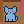
葵……お姉ちゃん。なんで私の一日に、攻略チャートがあるの
細かいことは気にせんとき〜(´∀｀)
！ 読む前に ！
- このページはネタバレだらけや。まずは何も見んと遊んだほうが、ぜったい楽しいで。
- 隠しエンディングとか、特にバレたらあかんとこはこんなふうに反転で隠してある。PC は文字をなぞって、スマホは点線のとこをタップしたら出てくるで。
- ゲームオーバーも時間切れもあらへん。のんびり遊んでな。
▼ もくじ
- 基本のあそびかた
- 全体チャート（あとの章に響くこと）
- 1章 あさ「撫でてもらう」
- 2章 ひる「プリンを守る」
- 3章 ゆうがた「ついていく」
- 4章 よる「葵だと気づいてもらう」
- エンディング全10種
- はっけん全リスト
基本のあそびかた
- あそぶのはネコになった葵。コマンドを選ぶだけや。「みる→マグ」みたいに、対象を選ぶコマンドもあるで。
- コマンドはいる場所で変わる。床・机の上・ソファの上で出てくるもんが違うから、「あれ？ 出てこーへん」ってときは、乗ったり降りたりしてみてな。
- 困ったら、メニューの「ヒント」。何回見ても、エンディングには関係あらへん。
- 寄り道や観察をすると「はっけん」が見つかる。ふつうのはっけんは全部で たくさん 個。それとは別に、姉妹の思い出の★とくべつなはっけんが各章に1個ずつあるで。
- どの「はっけん」を集めたか（＝一日の過ごし方）で、エンディングが変わる。全部で10種類。
- 行動が終わるたびに自動でセーブ。タイトルの「おもいで」で、見つけた はっけん・クリアルート・エンディングと「思い出すヒント」が見られるで。
- 操作：スマホはタップ。PC はクリックか数字キー、台詞送りは Enter か Space。
全体チャート
あとの章に響くこと
前の章でやったことを、うちはちゃーんと覚えとるで。太字のやつは、ルートが増えるから特におすすめや。
| やったこと | 響くところ |
|---|---|
| 1章：休憩中のうちに、床から すりすり→お姉ちゃん（だっこされた） | 3章：公園→商店街をうちの腕の中で移動／川原で「手に返事」ができる |
| 2章：ねこじゃらしで遊んだあとにすりすり→お姉ちゃん（遊んだあとに甘えた） | 4章：マグを「一緒に並べる」ルート／撫でる場面で一言 |
| 1章：冷めたお茶に気づかせた | 3章：川原で一言 |
| 1章：原稿をめちゃくちゃにした | 4章：机の場面と、ふりかえりで一言 |
| 2章：スプーンを落とした | 4章：ふりかえりで一言（原稿の件がなければ） |
| 2章：冷蔵庫を見た | 3章：商店街で一言 |
| 2章：床で なく（ここにいると返事をした） | 4章：はじめに一言 |
1章 あさ「お姉ちゃんに撫でてもらう」
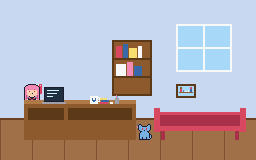
締切前で、うちは画面しか見てへん。葵の目標は、そんなうちの手を止めさせて、撫でてもらうこと。
結局のところ「うちを休憩させて、ソファで甘える」のが答えやで。
最短チャート（クリアルート：冷めたお茶）
- みる→マグお茶が冷めとるのに気づく。
- のる→つくえ初めて乗ると、キーボードを歩いて画面に「aaaa」。……これ、あとで大事になるで。
- すりすり→マグマグがうちの方へ。うちがお茶を淹れ直して、ソファで休憩や。
- のる→ソファ
- すりすり→お姉ちゃん（ねころぶ でもOK）なでなでで、クリア！
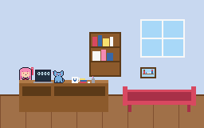
葵悩んでない。歩いただけ
別ルート
- 三つ落とす：のる→つくえ → おとす×3（ペン立て→消しゴム→本の山）。うちが「作業させる気ないやろ」って根負けして休憩する。あとは葵がソファで甘えたらええ。落としたもんは、あとで一緒に片づけたで。
- 原稿崩壊：のる→つくえ → ふむ → ミニゲーム「キーボードれんだ」。5秒で25回ふんだら成功や。長押しは数えへんから、ひたすら叩いてな。指2本で交互に叩くと速いで（PC はキー2つ交互でもOK）。成功したら、うちの原稿がめちゃくちゃになって、うちは休憩へ。失敗しても葵は机から降ろされるだけやから、もう一回 のる→つくえ → ふむ で何回でもやり直せる。
※原稿はちゃんと元に戻したから、怒ってへんで。
★ とくべつなはっけん「おそろいのしるし」
みる→マグ を何回か見る（1回目は冷めたお茶、2回目で持ち手の絵）。お茶を淹れ直したあとでもOKや。
おすすめ寄り道
- 休憩中のうちに、床から すりすり→お姉ちゃん。だっこされて、そのままクリアになる。これが3章に響くんよ。1周目はこれ推し！
- 作業中のうちに なく。かつおぶしをもらえる。
- 机の上で みる→ノートPC。うちの原稿は……三行で止まってます。見んといて。
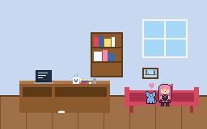
2章 ひる「プリンを守る」
コンビニから帰ったうちが、冷蔵庫から「あおい」って書いたプリンを出して……ちょっとだけ、味見しようとしてます。ちょっとだけやで？
葵カレーのスプーンだったよね
……ほな、葵に名前を見せてもろて、うちを止めてもらおか。
最短チャート（クリアルート：名前を回す）
- のる→テーブル
- みる→プリンふたの「あおい」が、ネコの方を向いとる。テーブルの上からやないと見えへんで。
- すりすり→ふたミニゲーム「プリンまわし」。左右で回すと、名前がうちの正面に来たとこで止まる。時間制限なし。
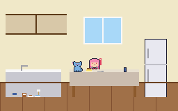
別ルート
- こっちで読んで：のる→テーブル → みる→プリン → なく。うちがテーブルを回って、葵の側から名前を読む。
ハマりどころ
- おとすでスプーンを落としても、新しいスプーンが出てくるだけ。時間かせぎにしかならへん。
- うちはふたを開ける直前で、ずーっと待っとる。何回行動しても勝手に食べたりせえへんから、焦らんでええで。
★ とくべつなはっけん「はんぶんこのやくそく」
みる→小さいスプーン。最初から見られるで。
おすすめ寄り道
- あそぶ→ねこじゃらし → すりすり→お姉ちゃん。葵がうちの膝に飛び込んでくるし、4章に響く。1周目はこれ推し！
- たべる→ごはん。小皿のカリカリ食べる葵がかわいい。ほんまに。
- みる→猫砂。
葵猫砂は使わないからね
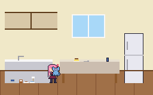
3章 ゆうがた「お姉ちゃんについていく」
夕方になっても葵が帰ってこーへんから、探しに出た。……ネコがついてきてくれたんよ。
ついていく×3（家の前→公園→商店街→川原）。間に、歩くミニゲーム「よみちさんぽ」が入るで。
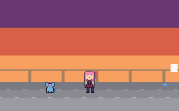
よみちさんぽのコツ
- ネコは勝手に歩く。▲▼で道を変えるだけ（PC は ↑↓）。目標は「うちと同じ道で、後ろを歩く」や。
- 足元の物は、うちが先によける。それを真似したら当たらへん。当たっても、ちょっとつまずくだけ。
- 端の道に出てくる蝶・草の穂・落ち葉・魚屋さんに寄ると「寄り道」。うちはちゃんと待っとるし、はっけんにもなるで。
- 公園からはダッシュ（PC は Space）。うちを追い越すと、葵が道案内してくれる。分かれ道で先頭やったら……どこ通るかはお楽しみ。
- 商店街では、うちが呼ぶから「なく」で返事してな（PC は Enter）。
- はっけん「お姉ちゃんと息が合った」は、3区間を通して同じ道を7割5分以上、返事3回以上。寄り道しても、戻ってきたらOK。
- 失敗はなし。スキップもできる（スキップした区間は「ふつう」あつかい）。
- 1章でだっこされとったら、公園→商店街はうちの腕の中。何もせんでええけど、なくと返事するで。
川原のチャート
川原のベンチで、うちが……ちょっと本音を言うてもうて。それから、指でベンチを「こつ、こつ」。これは、けんかしたあとの姉妹の合図や。一回返したら、仲直り。
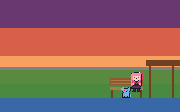
返し方は三つ。どれでもクリアや。
- ベンチで返事：ふむ→ベンチ（足元から）
- 私の席から：のる→ベンチ → ふむ→ベンチ
- 手に返事：1章でだっこされとったら、うちが手を出す。ふむ→て
葵帰り道、肩にもたれたのは眠かったからじゃないよ
はいはい(*´ω｀*)
★ とくべつなはっけん「かたほうだけのかた」
川原に着いたら、合図を返す前に みる→あずまや。返したら、そのまま帰り道になってまうで。
4章 よる「自分が葵だと気づいてもらう」
夜。うちは机に座ったまま、一文字も書けへんかった。
葵は名前を打って伝えようとする……けど、いきなり打っても、うちは見てへん。まずはうちに「この子、ほんまに……？」って思わせなあかん。この章だけ、ちょっと謎解きや。
最短チャート（クリアルート：写真どおりに）
- みる→しゃしん壁の写真。二人で初めて合同誌を作った日や。
- みる→マグ月と太陽のおそろいのマグ。どっちが誰のか分かる。
- のる→つくえ
- マグを写真の並びに戻す答えは下の「謎の答え」で。
- のる→いす机の端のスツール。葵の席や。うちが机を「こつ、こつ」。
- ふむ→つくえ一回返したら、うちが空のメモを開く。
- のる→つくえ → ふむ→キーボード肉球やと、隣のキーまで押してまう。
- つめ爪で一文字ずつ。A・O・I。間違えても消せるし、時間制限もなし。
- 「寝る前に、ひとつだけ」→ ねるクリア！
謎の答え
ヒント：壁の写真と、マグの持ち手の絵をよう見てな。「まわす」で絵の向きが反対に、「おす」で反対側の席へ動くで。
考え方：写真では、二人が机の端と端。それぞれの側に自分のマグ、絵は向かいの相手に向けとる。月は葵がうちに描いた絵（＝うちのマグ）、太陽はうちが葵に描いた絵（＝葵のマグ）。
答え：まわす→つきのマグ と おす→たいようのマグ。この2手（順番はどっちでもええ）。
月はうちの側で絵は葵の方、太陽は葵の席の側で絵はうちの方。間違えても、うちが「そっとな、割れもんやで」って言うだけや。
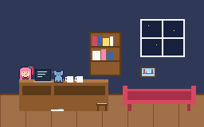
別ルート
- 一緒に並べる：2章で「遊んだあとに甘えた」をしとったら、正しい一手を動かすと、うちが察して残りを並べる。
★ とくべつなはっけん「さいしょのごうどうし」
みる→ほんだな。名前を伝える前にな！ 伝わったあとは見られへんで。
寝る前に、ひとつだけ
伝わったあと、目標は「寝る前に、ひとつだけ」。……ひとつだけ、言うたけど、実は ねる を選ぶまでは何個でも試せるで。すりすり→お姉ちゃん・なく・ねころぶ・みる→お姉ちゃん、どれもはっけんになる。
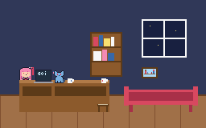
葵お姉ちゃん、この章のことになると急に口数が減るね
……減ってへんし。
エンディング全10種
次の朝、うちの原稿のタイトルが決まる。タイトルは、葵の一日の過ごし方しだいや。
- 判定は「その周回」で見つけた はっけん。「はじめから」で1章から通して遊んだ一日、ってことやな。
- 条件を満たしたエンディングが二つ以上あったら、終章の前に選べる。
- 「時間をえらぶ」で途中の章から始めると、それより前の章は「通ってへん」あつかい。全部そろえたいときは1章からな。
性格エンディングの条件
はっけんには性格がついとる。ある性格をその性格の全体の4割以上（かつ3個以上）見つけて、しかも割合がいちばん高いと、その性格のエンディングや。
| エンディング | 性格 | 全部で | 必要 |
|---|---|---|---|
| 読み込み中… | |||
一覧とおすすめ手順
手順は「ここだけ変えたら、あとは最短チャートでええ」ってやつや。ゲームに入れて、ちゃんと全部たどり着けるのを確かめたで。
妹はふつうネコ
どの性格も飛び抜けへんで、ほかに当てはまるもんもないとき。
手順を見る
1章だけ 原稿崩壊（のる→つくえ → ふむ → れんだ成功 → のる→ソファ → すりすり→お姉ちゃん）。あとは全部最短チャート。
妹はかしこいネコ
1章を「冷めたお茶」でクリアして、いたずら0のまま、1〜4章を通しでクリア。
手順を見る
全部、最短チャートのとおりでOK。いちばん素直な一日やな。
妹はくいしんぼネコ
くいしんぼ のはっけんを集める。全部で4個しかないから、ほぼ全部や。
手順を見る
- 1章：作業中のうちに なく（かつおぶし）
- 2章：たべる→ごはん×2（ごはん→お水）、みる→冷蔵庫
- あとは最短チャート
カリカリ食べとる葵、ほんまかわいいで。
妹はいたずらネコ
いたずら のはっけんを集める。
手順を見る
- 1章：三つ落とすでクリア（おとす×3）
- 2章：テーブルで おとす（スプーン）してから、最短チャート
- あとは最短チャート。3章の公園でダッシュしてうちを追い越したり、落ち葉に寄り道したりしたら、もっと増えるで。
妹はねぼすけネコ
ねぼすけ のはっけんを集める。とにかく、いろんなとこで ねころぶ。
手順を見る
- 1章：床で ねころぶ → 机の上で ねころぶ → うちが作業中にソファで ねころぶ。そのあと最短チャート
- 2章：床で ねころぶ
- あとは最短チャート。3章の川原や、4章のソファ・スツール・床でも ねころべるで。
妹はおしゃべりネコ
おしゃべり のはっけんを集める。とにかく なく。
手順を見る
- 1章：なく×2、休憩中のうちの隣（ソファ）でも なく
- 2章：床で なく → テーブルで なく → みる→プリン → なく（「こっちで読んで」でクリア）
- 3章：家の前で なく
- あとは最短チャート
妹はあまえんぼネコ
あまえんぼ のはっけんを集める。とにかく すりすり。
手順を見る
- 1章：床で すりすり→お姉ちゃん → みる→マグ → のる→つくえ → 机で すりすり→お姉ちゃん → すりすり→マグ → おりる → 床から すりすり→お姉ちゃん（だっこ）
- 2章：あそぶ→ねこじゃらし → すりすり→お姉ちゃん → 最短チャート
- 3章：道で すりすり→お姉ちゃん → 最短チャート
- 4章：「一緒に並べる」でマグを並べて、寝る前に すりすり→お姉ちゃん
これでちょうど8個。余裕がほしかったら、3章で「息が合った」や「手に返事」、川原の のる→ベンチも足しとき。
妹はみつめるネコ
かんさつ のはっけんを集める。とにかく みる。数がいちばん多いから、見られるもんは全部見よ。
手順を見る
- 1章：みる→お姉ちゃん×2、みる→ソファ、みる→マグ、机の上で みる→ノートPC×2。それから最短チャート
- 2章：みる→お姉ちゃん×2、みる→スプーン、みる→ごはん、みる→猫砂、テーブルで みる→スマホ。それから最短チャート
- 3・4章：最短チャートだけで、4章の写真とマグでちょうど足りる。3章の「みる→まわり」も各場所で見とくと安心や。
？？？（隠し その1）
妹はすなおなネコ：あまえんぼ を8個以上 ＋ 4章の「寝る前に、ひとつだけ」で すりすり→お姉ちゃん（頭をあずけた）。
手順は「あまえんぼネコ」とおんなじでOK。終章の前に選べるようになるで。
人間に戻った葵が……いや、これは見てのお楽しみや。うちの顔が赤いのは気のせいや。
？？？（隠し その2）
姉もネコ：同じ周回で ★を4つ全部見つける。マグの持ち手（1章）・小さいスプーン（2章）・あずまや（3章）・本棚（4章）。
- 1章：みる→マグ を2回
- 2章：みる→小さいスプーン
- 3章：川原で、合図を返す前に みる→あずまや
- 4章：名前を打つ前に みる→ほんだな
次の朝、元に戻った葵の前に……ピンクのネコ。
うちやん！！ なんでやねん！！
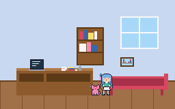
葵撫でたら「ふにゃあ」って言ってたよね
言うてへん。
はっけん全リスト
コンプリートしたい人向け。章ごとに開いてな。性格はエンディングの判定に使うやつや。コマンドの横のかっこは、そのときの状況やで。
読み込み中…（ゲームのデータを読んで表を作っとる）
以上、あかねでした！
葵がネコになっても、ならんでも、うちの妹はいちばんかわいい。
葵……最後の一行は、消さなくていい
ほな、またね〜ﾉｼ
Posted by あかね ｜ 23:41 ｜ コメント(3) ｜
コメント
あおい ｜ 2027/03/21 23:52
ネコのときのスクショ、勝手に載せないで
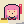
管理人：ゲームの画面やからセーフやろ？ かわいいもんは、みんなで見なあかんあおい ｜ 2027/03/21 23:55
「カリカリ食べる葵かわいい」って、三回書いてる
管理人：四回書いたつもりやったのに
あおい ｜ 2027/03/22 00:03
隠しの二つ目のところ。……原稿、踏まないでね
管理人：踏まへんし